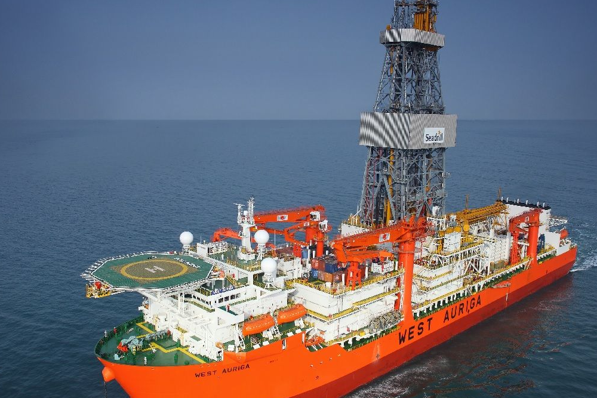

[Editor's note: This story originally appeared in the April 2020 edition of E&P. Subscribe to the magazine.]
In the age of the Fourth Industrial Revolution, technology is becoming more deeply integrated into every aspect of offshore operations. More equipment and operational data are being captured than ever before, and improved data analytics is transforming enormous amounts of information into actionable intelligence. Advances in technology are making operations more efficient and dramatically improving worker safety.
The oil and gas industry has been working to improve worker safety for decades, but the zero incident safety goal remains elusive. Statistics show improvements are being made, but there is a long way to go.
From 2007 to 2018, the U.K. recorded seven years with no fatalities, according to the Oil & Gas U.K.’s “Health & Safety Report 2019.” Unfortunately, five workers lost their lives offshore the U.K. during that same 10-year span. According to statistics from the U.S. Bureau of Safety and Environmental Enforcement, the U.S. has seen at least one fatality offshore each year from 2007 through 2018.
One of the primary causes of injuries is human error. Simply put, people get distracted. In areas like the red zone on the drill floor, where there are moving machinery and heavy drilling equipment, there is a high probability of injury when that happens.
, maintaining safety in the red zone has been the responsibility of the driller, who monitors workers and gives visual approval for entering and exiting the area. Meanwhile, the driller is managing the drilling process, responding to real-time data and making adjustments as downhole conditions change. Dividing focus between that complex process and activity on the drill floor inevitably leads to inattention that has the potential to result in serious injury.
simplest way to avoid accidents is to keep people out of harm’s way, and using advanced technologies is improving the ability to do that.
2018 Seadrill took on the challenge of harnessing technology to improve safety and began looking for ways to identify and predict the movement of people and equipment in the red zone that would not rely so heavily on human interaction. The result is a completely bespoke solution that automates the safety process, identifying incursions into the red zone and allowing personnel movement to be monitored and viewed in real time on the rig and from remote locations. Therefore, the potential for accidents can be minimized.
Seadrill’s Vision IQ is a next-generation safety system that monitors and provides advanced warning of potential risks. The system combines laser imaging, detection and ranging (LIDAR), artificial intelligence (AI) and advanced edge computing technology to enable safer and more efficient operations.
LIDAR system creates a dynamically monitored environment, providing up to 360-degree coverage on an area by emitting light and measuring the reflection to calculate distances accurate to a few millimeters. This generates approximately 700,000 sensor readings per second that are analyzed in real time. Algorithms identify and track the location and movement of people and equipment, and advanced AI technology allows realtime monitoring visualized in 3D.
system is engineered specifically for offshore drilling and, in the future, can be integrated into the rig’s anti collision system to create a unified, seamless approach to safety, automatically shutting down equipment when dangerous situations develop. Because the system is fully portable, it can improve safety not only by continuously monitoring the drill floor but by temporarily monitoring any area on the vessel.
IQ was tested in an onshore R&D facility before the first fully functioning prototype was installed on the West Neptune sixth-generation, ultradeepwater drillship for use in real-world environments. The successful pilot program led to plans for the system to be deployed on 12 rigs by the end of the year.
As part of its commitment to improving offshore safety, Seadrill has made the technology behind Vision IQ available to industry peers.
The company also is tapping into Big Data and data analytics technology, using real-time data from onboard equipment to optimize productivity, improve understanding of asset integrity and more effectively manage maintenance.
Working within an exclusive partnership with The Marsden Group, a Houston-based data science company, and using Microsoft Azure cloud-based computing, Seadrill has built a digital platform called PLATO to support the understanding and management of data gathered from its floating assets.
PLATO creates a digital twin that allows the performance of onboard equipment to be monitored, predicting fluid use, degradation and wear to identify potential failures. This digital platform collects and analyzes data, identifying performance patterns to monitor and control assets and streamline operations. It works by using a series of prebuilt algorithms and models that are trained to understand when any area of the performance data is showing an exception to the norm. When unusual or abnormal trends are identified, PLATO provides clear and specific recommendations for improving performance.
simplest way to avoid accidents is to keep people out of harm’s way, and using advanced technologies is improving the ability to do that.
2018 Seadrill took on the challenge of harnessing technology to improve safety and began looking for ways to identify and predict the movement of people and equipment in the red zone that would not rely so heavily on human interaction. The result is a completely bespoke solution that automates the safety process, identifying incursions into the red zone and allowing personnel movement to be monitored and viewed in real time on the rig and from remote locations. Therefore, the potential for accidents can be minimized.
Seadrill’s Vision IQ is a next-generation safety system that monitors and provides advanced warning of potential risks. The system combines laser imaging, detection and ranging (LIDAR), artificial intelligence (AI) and advanced edge computing technology to enable safer and more efficient operations.
LIDAR system creates a dynamically monitored environment, providing up to 360-degree coverage on an area by emitting light and measuring the reflection to calculate distances accurate to a few millimeters. This generates approximately 700,000 sensor readings per second that are analyzed in real time. Algorithms identify and track the location and movement of people and equipment, and advanced AI technology allows realtime monitoring visualized in 3D.
system is engineered specifically for offshore drilling and, in the future, can be integrated into the rig’s anti collision system to create a unified, seamless approach to safety, automatically shutting down equipment when dangerous situations develop. Because the system is fully portable, it can improve safety not only by continuously monitoring the drill floor but by temporarily monitoring any area on the vessel.
IQ was tested in an onshore R&D facility before the first fully functioning prototype was installed on the West Neptune sixth-generation, ultradeepwater drillship for use in real-world environments. The successful pilot program led to plans for the system to be deployed on 12 rigs by the end of the year.
As part of its commitment to improving offshore safety, Seadrill has made the technology behind Vision IQ available to industry peers.
The company also is tapping into Big Data and data analytics technology, using real-time data from onboard equipment to optimize productivity, improve understanding of asset integrity and more effectively manage maintenance.
Working within an exclusive partnership with The Marsden Group, a Houston-based data science company, and using Microsoft Azure cloud-based computing, Seadrill has built a digital platform called PLATO to support the understanding and management of data gathered from its floating assets.
PLATO creates a digital twin that allows the performance of onboard equipment to be monitored, predicting fluid use, degradation and wear to identify potential failures. This digital platform collects and analyzes data, identifying performance patterns to monitor and control assets and streamline operations. It works by using a series of prebuilt algorithms and models that are trained to understand when any area of the performance data is showing an exception to the norm. When unusual or abnormal trends are identified, PLATO provides clear and specific recommendations for improving performance.
The platform also monitors the BOP in real time and feeds the information to the operating company, which can monitor performance remotely. By collecting millions of lines of data relating to every aspect of performance and turning it into usable information, Seadrill is extracting knowledge that can be used to make faster and more informed decisions to better manage asset integrity. Over time, not only does the company learn from the actions taken onboard specific rigs, but it also can visualize how these actions influence performance across the fleet.
PLATO is already on all Seadrill drillships, and work is underway to analyze if it should be rolled out across the rest of the floater fleet so data can be gathered from multiple assets and crews. Currently, by looking at the drillship fleet as a whole, it is possible to see trends and measure efficiencies more precisely.
PLATO will track the time it takes to trip in and out of the hole, analyze performance, identify which drillers are least and most efficient, and use this information to help people improve processes and best practices across the company. Internal training programs can be developed using historical drilling data to tailor courses that use a simulator to help drillers improve. The result will be enhanced safety and efficiency across the board.
While this is a useful application of the technology, it is not the only improvement enabled by the digital platform. PLATO also gathers equipment performance data for improved maintenance planning. Crew members can access performance data using devices like iPads to better understand fatigue and wear and plan repair and replacement based on the condition of the equipment instead of adhering to a predetermined and often inefficient maintenance plan.